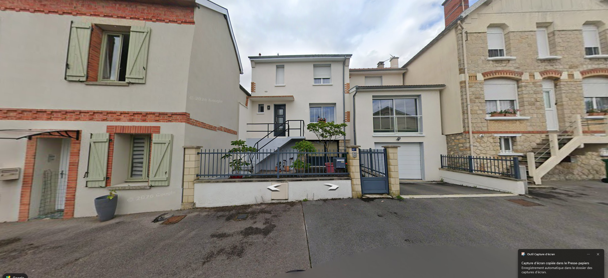
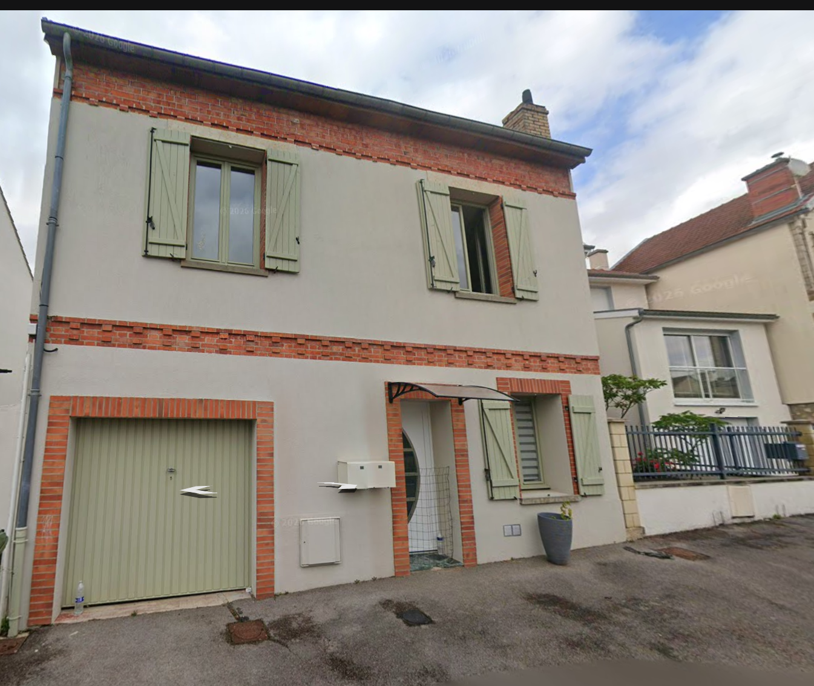
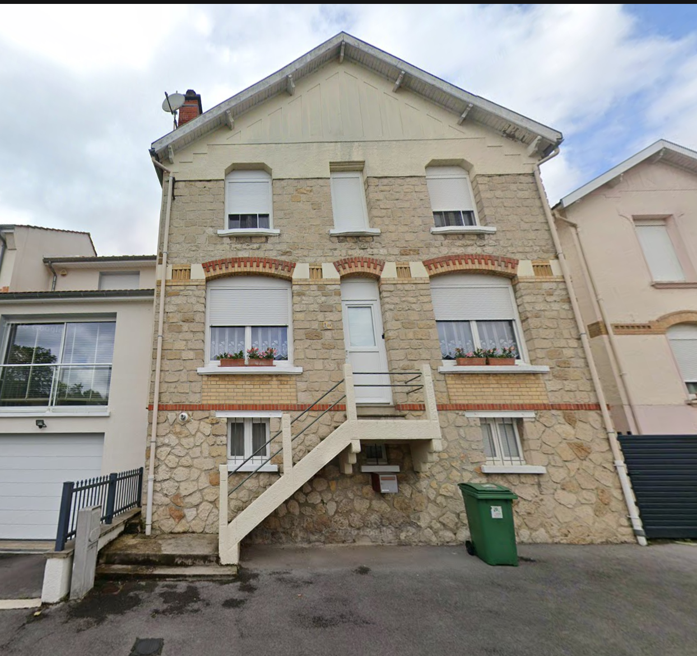
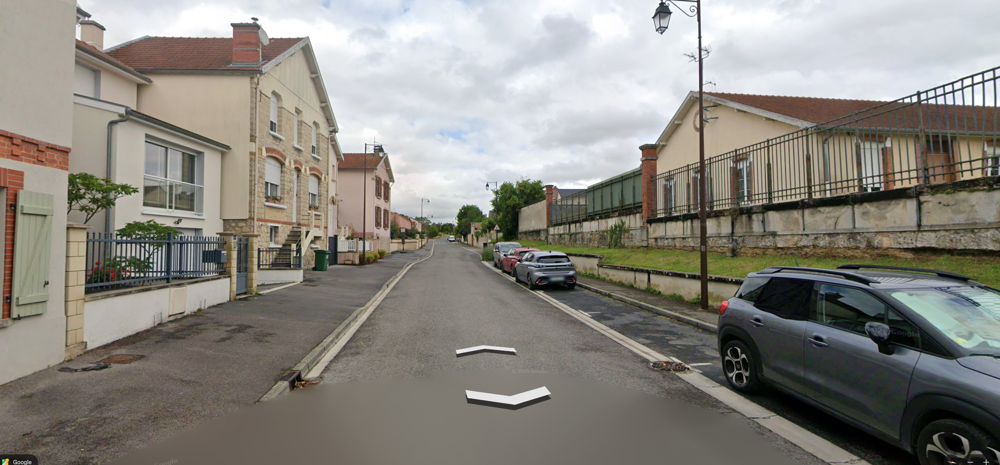

01 · Maison blanche, escalier, garage et clôture

Sur la carte · Explorer le modèle
Quatre captures fournies, crédits Google Maps / Street View. Emprises OSM, contrôle de placement par orthophotographie IGN. Proportions estimées ; façades cachées simplifiées.



